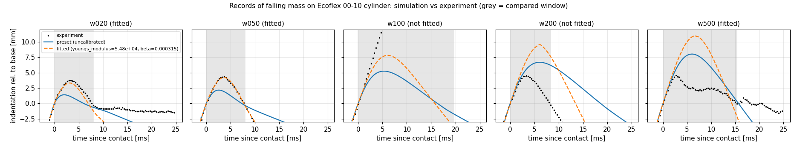
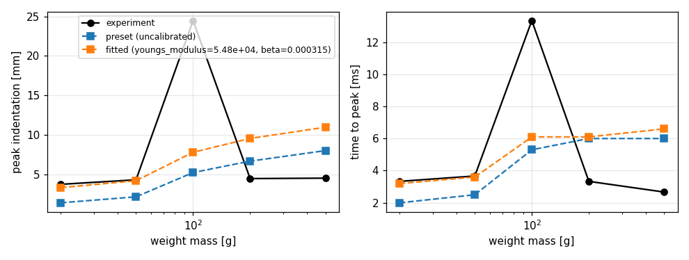
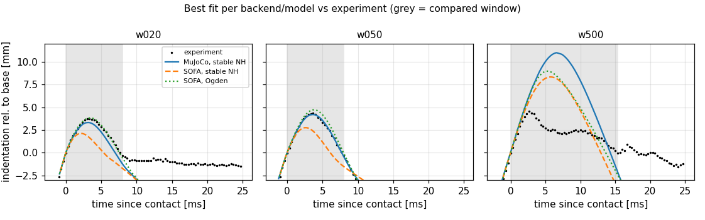
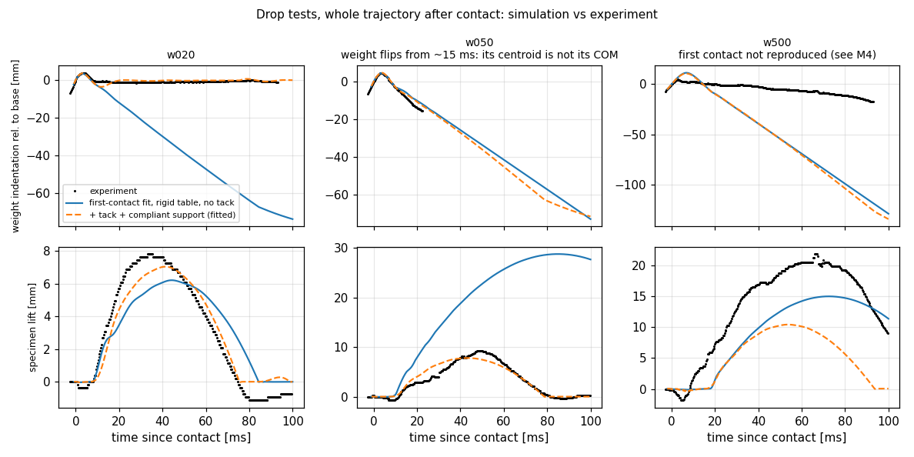
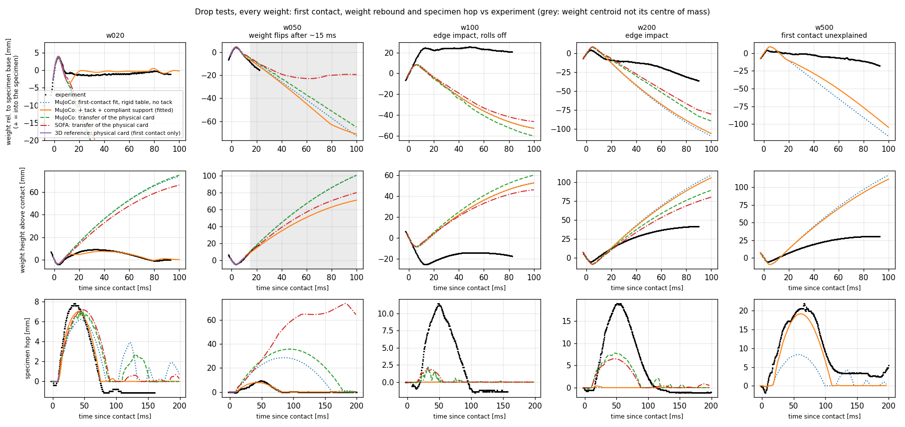

Experiments: tracking and calibration¶
softsim track datasets/czopek2026_ecoflex_drop.yaml --jobs 5 # about 3 min; data/processed/<dataset>/
softsim calibrate calibrations/ecoflex_00_10_drop.yaml --jobs 3 # about 4 min; runs/calibration/...
Dataset description¶
datasets/czopek2026_ecoflex_drop.yaml records the DOI, licence, camera,
specimen and, per case, the zip archive, the scenario config and how the
weight looks. Frames are read directly from the zips (FrameSource); nothing
is extracted or redistributed.
Tracking (softsim/experiments/video/)¶
Segmentation. The backdrop is saturated green with no red, and shadows on it stay red-free. A per-pixel reference background (the median of the first frames) separates three classes:
- the translucent specimen: red present, bluish;
- brass weights: red present, neutral;
- black weights: much darker than the background behind them.
Scale and camera. The specimen's resting silhouette width equals its diameter, giving about 5.5 px/mm. Its silhouette height, H·cos e + D·sin e, gives a camera elevation of e ≈ 17–20°. Vertical motion therefore scales by cos e.
Weight motion. The weight is followed as a rigid body (x, y and in-plane rotation) by incremental ECC alignment of its upper part, frame to frame. The upper part keeps the specimen and the weight's shadow out of the mask. The weights rotate strongly during impact (the 20 g seats with about 10° of rocking, the 100 g rolls about 100°), and a translation-only template loses them. The tracked point is the silhouette centroid, which is close to the centre of mass.
Contact. Contact is the first frame where the centre of mass departs from
a local free-fall parabola by more than 0.5 px (about 0.1 mm). The same rule is
applied to simulations (compare.simulated_indentation).
Compared quantity. indentation_rel is the centre-of-mass displacement
since contact, relative to the specimen base.
Findings about the recordings¶
| Case | Impact speed | Offset | Spin | Usable? |
|---|---|---|---|---|
| 20 g (brass) | 2.67 m/s | +6 mm | 317 °/s | yes; lands slightly tilted and rocks while seating |
| 50 g (brass) | 2.47 m/s | 0 mm | 48 °/s | yes for the first contact; tumbles off afterwards |
| 100 g (black, no knob) | 2.47 m/s | +14 mm | 27 °/s | no: hits the specimen edge and rolls off |
| 200 g (black) | 2.62 m/s | −13 mm | −59 °/s | no: tilted edge impact |
| 500 g (black) | 2.65 m/s | −6 mm | ~0 | first contact only; see below |
- Frame rate is 2999.3 fps (overlay timestamps). Impact speeds are 2–10% below the nominal 2.73 m/s, so simulations use the measured value per case.
- Local free-fall fit. Just before contact the tracker fits a free quadratic to the weight's height. Its apparent acceleration comes out at only 3–4 m/s², but over the 8 ms fit window that is a difference of about 1 px from free fall. M3 blamed perspective; that is not established (the specimen's hop, below, decelerates faster than g). It doesn't matter for contact detection, and the fitted impact speeds agree with the nominal drop speed.
- The specimen hops; the table does not move. After impact the specimen rises 8–20 mm and lands again 70–110 ms later. The green cloth it sits on rises next to it (most near the specimen, less 55 mm away, with ripples spreading out), while the backdrop lighting band stays within ±1 px, so the camera is still. The 200 g specimen visibly tilts and slides in mid-air. The tacky specimen sticks to the cloth and drags it up, which is also why its hop decelerates at 13–20 m/s², faster than g. Correction: M3 read this as the table moving and discarded everything after the first contact; see After the first contact.
- Out-of-plane tilt can't be measured from a single side view. Simulations get the measured horizontal offset and in-plane spin; tilt stays zero.
- Rotation is the less precise output. On synthetic sequences the tracker recovers position to about 2% of the motion and rotation to about 20%.
- Correction to Step 0: the 4 mm preview estimate for 20 g happens to match (3.7 mm). The method was unreliable, though: it used the weight's bottom edge, which the specimen rim hides.
Calibration (softsim/experiments/calibrate.py)¶
calibrations/ecoflex_00_10_drop.yaml fits stable Neo-Hookean E and Rayleigh
β (in log space) on MuJoCo to the 20, 50 and 500 g cases at once:
- Optimizer: a coarse 4×4 grid, then Nelder-Mead, 50 evaluations.
- Simulations: each case uses its measured impact conditions and a 5 mm mesh.
- Cost: the mean of RMSE divided by the experimental peak over the first contact phase.
- Outputs: the fitted preset (with provenance), the evaluation history,
report.yamland plots. - Failures and resuming: an unstable parameter set, or one that crashes its
worker process outright, gets the maximum per-case cost (10) instead of
stopping the run. Each evaluation is appended to
<output>/evaluations.jsonl. Re-running the calibration replays those evaluations, so an interrupted multi-hour run resumes where it stopped. Changingmax_evaluations,grid, bounds or initial values keeps them. The log does not know about code changes: delete it after changing simulation code. The history also records each case's maximum ground penetration, which flags contact artefacts.
Result: E = 54.8 kPa and β = 0.31 ms. This is preset
ecoflex_00_10_drop_fit.
E is lower than the 91 kPa datasheet-derived starting estimate, and very close
to the datasheet's 100% modulus (55 kPa).

| Case | Peak exp | Peak, preset (91 kPa) | Peak, fitted | t_peak exp / fitted | NRMSE fitted |
|---|---|---|---|---|---|
| 20 g | 3.74 mm | 1.40 mm | 3.32 mm | 3.3 / 3.2 ms | 15% |
| 50 g | 4.31 mm | 2.16 mm | 4.20 mm | 3.7 / 3.6 ms | 3% |
| 500 g | 4.52 mm | 8.01 mm | 10.97 mm | 2.7 / 6.6 ms | 113% |
| 100 g, 200 g | edge impacts, not fitted |

What this does and does not show¶
- For light weights the model works. For 20 g and 50 g (local indentation by a weight smaller than the specimen), a Neo-Hookean solid with one Rayleigh damping coefficient reproduces the whole first contact (loading, peak and unloading) within 3–15%.
- For the 500 g weight it fails. That weight is wider than the specimen and compresses its whole face. In the recording it stops within 4.5 mm in 2.7 ms, while the model needs about 11 mm and 6.6 ms. No single (E, β) fits both regimes. The measured peak indentation is almost independent of mass (3.7 → 4.5 mm for 25× the energy). Candidate explanations, none verified:
- rate-dependent stiffening of the silicone, which Rayleigh damping can't represent;
- stronger large-strain stiffening than Neo-Hookean;
- near-incompressibility under full-face confinement (the model uses ν = 0.45);
- energy absorbed by the compliant table, which is measurable here but not modelled.
M4 tested the material-law and compressibility candidates on SOFA; see
below.
- The fit depends on the mesh. With the fitted values, the 20 g peak goes
3.32 → 3.55 → 3.79 mm as the mesh refines from 5 to 3.5 to 2.5 mm. Use the
preset with specimen.mesh.size=5mm, or refit at the target resolution.
- 50 g after first contact isn't modelled. In reality the weight tumbles
off after the first contact, so later times shouldn't be compared.
Fitting any scenario to a measured table (softsim fit)¶
softsim calibrate is built around the drop test's tracked videos. softsim fit
is the scenario-neutral version: any observable column of any scenario against
a measured table, registered with its source. A fit file is a transfer file
(config, backend, overrides, parameters, checks, max_evaluations,
output, see softsim/transfer.py) whose reference: is replaced by data:
(softsim/experiments/fit.py has the full description):
data:
source: {name: ..., doi: 10.xxxx/..., licence: CC-BY-4.0, file: ../data/processed/x/table.csv}
kind: curve # y against a simulated x (a quasi-static ramp), or series: y(t)
filter: {tilt: 0} # rows with these column values
x: {column: p_kPa, scale: 1000, sim: cavity_pressure}
y: {column: theta_deg, scale: 0.0174533, sim: bend_angle}
relative_to: first # compare changes from the first sample (zero offsets in the data)
source must give name, doi, licence and file, so a number in a
report can be traced. The error is the NRMSE of the transfer (RMS difference
over the largest measured change); the report adds the data's own noise floor
(the scatter at repeated x over the same range), because a fit cannot be
better than that. The fitted card is kind: physical on the reference
(--backend fem), effective on the linear-tet backends, and it names the
measurement in its provenance.
Check (a twin experiment, tests/test_fit.py): the "measurement" is the
sphere's pressure-volume curve at a hidden E = 45 kPa. Fitting from 25 kPa
gives back 45.18 kPa from the clean curve (0.4%), and 46.6 kPa from the same curve with 1% noise (3.5%, a cost of
0.018, about the noise). A wrong modulus costs more than 10 times the right
one on a time series, and four mutants of the code (dropped unit scale, dropped
baseline, whole run instead of the loading branch, ignored filter) are caught.
This tests the machinery against a known answer; it says nothing about a real
actuator. That needs a measurement with a known geometry and material.
Backends and material models (M4)¶
Same cases, cost and procedure on the SOFA backend, which offers more material laws. The question: can a different material law reproduce 500 g together with 20 and 50 g? Both SOFA fits use a 5 mm mesh and dt = 0.05 ms (0.1 ms diverges for 500 g) and took about 1 h and 2.7 h on 8 cores.
| Fit | Parameters | Cost | 20 g | 50 g | 500 g peak / t_peak (exp 4.52 mm / 2.7 ms) |
|---|---|---|---|---|---|
MuJoCo, stable NH (ecoflex_00_10_drop_fit) |
E 54.8 kPa, ν 0.45, β 0.31 ms | 0.44 | 15% | 3% | 11.0 mm / 6.6 ms |
| SOFA, stable NH (calibration) | E 105 kPa, ν 0.45, β 0.89 ms | 0.54 | 49% | 37% | 8.3 mm / 5.7 ms |
SOFA, one-term Ogden (ecoflex_00_10_drop_fit_sofa_ogden) |
μ 22.9 kPa, α 1.20, K 200 kPa, β 0.28 ms | 0.24 | 3% | 11% | 9.0 mm / 5.3 ms |
(Percentages are NRMSE over the first contact phase. Reproduce the figures
with python tools/make_model_comparison.py.)

What M4 shows:
- No material law fits 500 g. Each fit leaves 500 g about twice too deep and twice too slow. The SOFA stable-NH fit is a compromise that fits nothing: it stiffens to help 500 g and then misses 20 and 50 g by 37–49%.
- Large-strain stiffening isn't the explanation. The Ogden fit chooses α ≈ 1.2, less stiffening than Neo-Hookean (α = 2), and fits 20 and 50 g within 3–11%, the best of the three. The M3 candidate "stronger large-strain stiffening" is ruled out for this data.
- Same model, different backend, different parameters. Stable NH on MuJoCo and SOFA ends at E = 55 vs 105 kPa (compliant vs hard contact, integrator damping; see sofa.md). Fitted values are effective parameters of a backend + mesh + model combination.
- Compressibility matters for the full-face impact. At peak, the SOFA fits lose 27% (Ogden) and 36% (stable NH) of the specimen's volume. Silicone is practically incompressible, so ν = 0.45–0.47 is wrong here; under local indentation the material can flow aside and ν matters much less. Single runs of the Ogden fit with a higher bulk modulus (not refitted):
| Bulk modulus (ν) | 20 g peak (exp 3.74) | 500 g peak (exp 4.52) | 500 g t_peak (exp 2.7) |
|---|---|---|---|
| 200 kPa (0.466), fitted | 3.82 mm | 8.96 mm | 5.3 ms |
| 1 MPa (0.493) | 3.54 mm | 7.65 mm | 5.2 ms |
| 5 MPa (0.499) | 3.31 mm | 6.54 mm | 4.6 ms |
Near-incompressibility closes about 45% of the 500 g peak gap while 20 g
stiffens 12%, partly linear-tetrahedron locking. A joint refit with the bulk
modulus free is prepared but not run yet
(ecoflex_00_10_drop_sofa_ogden_bulk.yaml,
about 3–4 h; repeat at a 3.5 mm mesh to separate locking from material).
- The remaining gap (500 g still about 45% too deep and 70% too slow at
ν ≈ 0.5) points to what no tested model has: rate-dependent stiffening
(Prony viscoelasticity; Rayleigh β can't represent it) and/or the compliant
table.
- SOFA contact failed at extreme rim flaring (fixed). In the Ogden 500 g run the
specimen's rim spreads to 45 mm radius and, from 7.6 ms (after the peak at
5.3 ms), rim vertices passed up to 8.5 mm through the ground. No element
inverts. The cause was the intersection's alarm distance (0.4 mm) against the
rim's 0.6 mm per step when it snaps back onto the ground; the backend now
widens it to the fastest vertex's travel
(backends/sofa.md: 2.83 mm to 0.006 mm at 8.8 ms, peak unchanged). The
500 g peak and timing were before this and are reproduced (9.0 mm / 5.3 ms); the fit's stored 500 g NRMSE
(58%) included the artefact, and re-simulated without it the 500 g NRMSE is 79% (2026-11-12). The Ogden fit's
cost of 0.24 above was minimised with the artefact in its 500 g term.
- Re-simulating these fits needs their own setup. They were made (28-29 Oct) before the measured 11° in-plane
landing tilt of the 500 g drop was applied to every re-simulation (31 Oct); with the tilt, both SOFA fits blow up
at 5 mm / 0.05 ms (8.3-8.4 ms, a real instability, not the speed guard) and the figures were left without 500 g.
Their calibration files now say tilt: false, and tools/make_model_comparison.py re-simulates each fit as it
was fitted. Whether SOFA survives the tilted impact at a finer mesh or step is open.
After the first contact: tack and the hopping specimen¶
M3 and M4 compared only the first ~8 ms, because M3 had read the later motion as the table moving. That was wrong (see the findings above): the specimen itself hops. The whole first 100 ms is usable data, and it shows that the simulations got the physics after the first contact wrong. Without any adhesion, the simulated 20 g weight flies off at 1.2 m/s and rises 70 mm. The real one never leaves the specimen.
What the recordings show:
- 20 g: the weight sticks. It comes off the compressed material at 1.0–1.2 m/s relative to the base, as fast as in the simulation, and then stops within about 1 mm and stays there for 90 ms while rocking. Momentum says why: 20 g × 1.0 m/s ≈ 42 g × 0.45 m/s, and weight plus specimen then hop together at about 0.45 m/s (7.6 mm apex). The weight is stuck to the tacky Ecoflex and pulls the whole specimen off the cloth.
- 50 g: the weight peels off. With 2.5× the momentum, the bond can't hold the weight. It separates while rotating (a peel from one edge) at about 1 m/s relative to the specimen, the same as the simulation up to 22 ms. After that it tumbles away from the camera and lands on the table behind the specimen (it lies still there from ~210 ms). Its image height then mixes height with depth, so the side view can't measure its rebound. The specimen still hops 8 mm.
- 500 g: the weight lifts the specimen with it by 20 mm, and separates only around 70–100 ms.
- The cloth comes along. The green cloth next to the specimen rises with it and ripples, and the hop decelerates at 13–20 m/s², faster than g: the specimen sticks to the cloth too.
Model. Two scene elements, both general features of softsim:
- Adhesion (
material.adhesion: {strength, range}), an exponential cohesive law for the normal traction between the soft surface and what it touches (t = σ (g/δ) e^(1 − g/δ); work of separation e·σ·δ). Bonds form on contact and break beyond 6δ. Verified against analytic equilibria on MuJoCo and SOFA (tests/test_adhesion.py). - A compliant support (
support:in the drop test): a carrier plate under the specimen that can lift off the table against a spring and damper. It is a lumped stand-in for the cloth, and its parameters are effective ones.
Fit (calibrations/ecoflex_00_10_drop_adhesion_support.yaml, MuJoCo,
5 mm mesh). Compared quantities:
- 20 g: weight position relative to the specimen base and specimen lift over 0–100 ms;
- 50 g: relative position over 0–15 ms (later, the flipping weight's centroid is not its centre of mass) and specimen lift over 0–100 ms.
500 g is not used (below).
Only the tack and support are fitted; the bulk material stays at its M3
first-contact values (preset
ecoflex_00_10_drop_fit_tacky;
softsim sweep scenarios/drop_test/sweeps/fitted_tack_support.yaml runs all five weights with it):
| Fitted value | |
|---|---|
| tack strength σ | 14.6 kPa |
| tack range δ | 0.29 mm (work of separation e·σ·δ ≈ 11.6 J/m²) |
| support stiffness, damping, mass | 33 N/m, 0.35 N·s/m, 45 g |
| Case | Observable | Without tack (rigid table) | With tack + support |
|---|---|---|---|
| 20 g | weight rel. to base, 0–100 ms | flies off (−75 mm at 100 ms) | stays seated; NRMSE 25% |
| 20 g | specimen hop | 6.2 mm, too slow | 7.0 mm (exp. 7.8), lands at ~80 ms; NRMSE 12% |
| 50 g | weight rel. to base, 0–15 ms | NRMSE 6% (first contact and separation) | |
| 50 g | specimen hop | 29 mm | 8 mm (exp. 9); NRMSE 11% |
Total cost 0.133 (90 evaluations, flat from about the 55th), against 0.48 at the first initial guess.
What to make of it:
- Tack, not dissipation, is why the simulations flew too high. In the MuJoCo model the weight already leaves the compressed specimen at the measured speed. What was missing is that it stays stuck.
- The parameters are effective, and tied to the mesh. The tack is a cohesive law whose process zone (~4 mm) the 5 mm mesh doesn't resolve. On a 3.5 mm mesh the same values let the 20 g weight peel off. The support is a lumped stand-in for a cloth that sticks, stretches and ripples, so 45 g and 33 N/m are not the cloth's mass and stiffness.
- Checked: halving the timestep changes the errors by less than 0.01.
- The cloth pulls back harder than gravity (13–20 m/s² in the recordings). The fit captures that through the spring, which is why the simulated hop is about 10% too low but lands on time.
- 500 g is outside this model (below). With its first contact 2.4× too deep, the weight rebounds too fast for any bond and tears off.

Every weight, whole bounce (validation)¶
python tools/validate_drop_bounces.py (about 1 min on 8 cores) runs all five
weights with each recording's measured impact for 200 ms. It compares the
first contact, the weight's rebound (its height above its contact height) and
the specimen's hop (runs/bounce_validation/metrics.csv, figure
docs/media/bounce_validation.png). It covers the two MuJoCo models above
and, since 2026-10-31, the MuJoCo and SOFA transfers of the physical card,
plus the 3D reference's first contacts.
- The transfers reproduce the first contact best: 6–8% at 20 g, 8–14% at 50 g.
- They have no tack, so the weight then flies 38 mm high instead of staying seated.
- They diverge where their strong relaxation lets heavy weights crush the specimen: MuJoCo from 100 g, SOFA at 500 g.
(Those numbers are for the transfers of the earlier physical card, 143 kPa / 0.69 / 2 ms, run on 2026-10-31. With the joint card below (2026-11-02), the table's first-contact NRMSE against the recordings is 13% (MuJoCo) and 4% (SOFA) at 20 g and 6% and 5% at 50 g; the 3D reference itself gives 14% and 3%. The weight now rises 72 (MuJoCo) and 64 mm (SOFA) at 20 g, still with no tack. MuJoCo diverges only at 500 g, like SOFA: its 200 g run completes. The run was done with the MuJoCo timing fix of that day, see below.)
python tools/make_comparison_media.py writes docs/media/compare_wXXX.gif:
for each weight, the recording next to the MuJoCo tack-and-support model,
with the same scale and view angle.
| Case | First peak mm (t ms) | Weight max rise mm | Specimen hop mm (t ms) | Specimen landed ms | |
|---|---|---|---|---|---|
| 20 g | experiment | 3.7 (3.3) | 9.1 | 7.8 (33) | 73 |
| rigid, no tack | 3.3 (3.0) | 71 | 6.2 (44) | 83 | |
| tack + support | 3.5 (3.2) | 7.5 | 7.0 (41) | 74 | |
| 50 g | experiment | 4.3 (3.7) | 10.1 (to 15 ms) | 9.2 (48) | 79 |
| rigid, no tack | 4.3 (3.6) | 10.8 | 29 (85) | 161 | |
| tack + support | 4.5 (3.8) | 9.2 | 7.8 (44) | 78 | |
| 100 g (edge) | experiment | rolls off the rim | falls 25 mm beside it | 11.4 (48) | 94 |
| tack + support | 8.1 (6.1) | 48 (bounces up) | 0.1 | ||
| 200 g (edge) | experiment | 4.5 (3.3) | 42 | 18.9 (50) | 108 |
| tack + support | 8.7 (4.6) | 96 | 0.3 | ||
| 500 g | experiment | 4.5 (2.7) | 31 | 21.8 (66) | after 200 |
| tack + support | 9.0 (5.0) | 105 | 20.1 (62) | 111 | |
| (same, dropped flat) | 10.7 (6.7) | 126 | 10.4 (54) | 93 |
The 100, 200 and 500 g simulations get each recording's measured in-plane tilt
at contact (−7.6°, −8.7° and −11.0°; tools/measure_tilts.py,
softsim.experiments.video.tilt). It is measured from the straight side edges
of the dark weights' silhouettes 15 frames before contact, with 0.5–1.6 px
residuals and less than 1.3° of spread. The brass weights' reflections and
knobs make their edges unusable, so 20 and 50 g stay untilted. The rigid model
gives the same as tack + support for 100–500 g within a few mm. All weight
numbers after 15 ms are unusable for 50 g: the weight flips.

- 20 g and 50 g are reproduced over the whole bounce: hop height within 10–15%, landing time within 2 ms, and the 20 g weight stays seated. That is what the tack and the support were fitted to.
- 100, 200 and 500 g all fail. In every simulation the weight rebounds 45–130 mm and leaves the specimen behind. The real heavy weights rise only 30–40 mm (or roll off) and carry the specimen up 11–22 mm with them. Two of the three are not comparable impacts, though: the simulations drop every weight flat, and the heavy weights don't land flat.
- 200 g comes down strongly tilted: its bottom face is visible from the camera above. It digs in with its edge and keeps rotating, so its shallow 4.5 mm "first contact" is an edge impact, not evidence of a stiffer material.
- 100 g lands 14 mm off centre and tilted. It rolls off the rim, falls 25 mm beside the specimen and still drags the specimen up 11 mm.
- 500 g lands least tilted: 11° in the image plane, rotating only 2°
in the first 20 ms, with an unknown out-of-plane tilt.
- Applying the measured tilt brings the specimen's hop from 10 to 20 mm (measured 21.8 mm) and its first contact from 10.7 to 9.0 mm.
- It still stops at 4.5 mm in 2.7 ms in the recording.
- Its rise height means an upward speed of about 0.8 m/s (restitution about 0.3), against about 1.4 m/s simulated, so the real impact is still stiffer and more lossy than the model.
- The tack doesn't change it.
- Next: compare the heavy weights only with the measured attitude. The in-plane tilt can be measured. The out-of-plane tilt needs either a second view or a 3D fit in which it is a free parameter. Until then, the material question rests on the flat impacts (20 and 50 g) and on 500 g (below).
The 500 g first contact¶
The 500 g weight stops within 4.5 mm in 2.7 ms. No simulation so far gets close: every material law, both backends and a near-incompressible bulk modulus leave it at 6.5–11 mm and 4.6–6.6 ms (M4). Three checks so far:
- The tracking is right. Tracking the top edge of the weight's knob against the plain backdrop, independently of the tracker, gives the same motion within 0.5–1 mm. The weight travels almost freely for the first ~1 ms, then decelerates at ~1750 m/s² (~900 N), and comes back up at ~0.85 m/s.
- It lands tilted, which explains part of it. Before impact the weight is tilted by 11° in the image plane (side-edge fits, see the bounce validation). The simulation with that tilt peaks at 9.0 mm at 5.0 ms instead of 10.7 mm at 6.7 ms: closer, but not close.
- No elastomer explanation fits. As a linear spring, the stop needs ~170 kN/m, an effective modulus above 1 MPa, against ~55 kPa from the light weights. That is 19× the 50 g case's stiffness, with a shorter time to peak than 20 g despite 25× the mass. No string or guide is visible above the weight.
-
It is not a modelling artefact of the tetrahedral backends. The locking-free axisymmetric reference (reference_fem.md) is nearly incompressible (ν = 0.4995) with sticking contact on both faces, so it has none of the suspects: locking, volume loss, friction slip. It still peaks at 8.1 mm (E = 100 kPa) and 6.4 mm (E = 200 kPa), against the measured 4.5 mm. Statically, sticking faces stiffen 26% compression only 1.7× over frictionless.
-
Rate dependence does not explain it either. This was tested with Prony viscoelasticity on MuJoCo: 48 combinations of instantaneous modulus E0 = 100–800 kPa, relaxing fraction g = 0.5–0.95 and τ = 0.3–3 ms, each case with its measured impact. Every material that stops 500 g near the measured depth stops 50 g at a quarter of its measured depth. For example, E0 = 800 kPa, g = 0.5, τ = 1 ms gives 3.85 mm at 2.9 ms for 500 g (measured 4.52 mm at 2.7 ms) but 1.10 mm at 1.1 ms for 50 g (measured 4.31 mm at 3.7 ms). Both weights hit at the same speed, so their strain rates are similar, and no linear viscoelastic spectrum can stiffen one and not the other. (Materials with a soft long-term modulus made MuJoCo diverge under 500 g; the trend is clear without them.)
- It does not land flat. The frame montages show the weight squashing the specimen into a wedge, and it rotates only 2° in the first 20 ms. Its side edges give an 11° in-plane tilt (the earlier 7° estimate is superseded). With that tilt, MuJoCo's first contact goes from 10.7 to 9.0 mm and the specimen's hop from 10 to 20 mm (measured 21.8 mm).
- Out-of-plane tilt does not explain it. That tilt can't be seen from one
view, so it was swept on MuJoCo (
python tools/sweep_out_of_plane_tilt.py, first-contact fit card, measured impact and in-plane tilt):
| Out-of-plane tilt | 0° | 5° | 10° | 15° | 20° | measured |
|---|---|---|---|---|---|---|
| First contact [mm] | 9.08 | 8.69 | 8.42 | 8.04 | 7.53 | 4.52 |
| Time of peak [ms] | 4.8 | 4.6 | 4.4 | 4.2 | 4.0 | 2.67 |
Even 20°, more than the side view could hide, takes off only 17% of a 2× gap. The MuJoCo transfer of the physical card (Prony g = 0.94) inverts elements under 500 g and can't be used for this case.
- The force the film implies. The force on the weight at its peak indentation is m·(a + g), with the deceleration a taken from a parabola through the tracked indentation (±0.8 ms around the peak):
| Weight | Peak indentation | Time of peak | Deceleration at peak | Force at peak |
|---|---|---|---|---|
| 20 g | 3.74 mm | 3.33 ms | 750 m/s² | 15 N |
| 50 g | 4.31 mm | 3.67 ms | 1285 m/s² | 65 N |
| 200 g (tilted) | 4.47 mm | 3.33 ms | 615 m/s² | 125 N |
| 500 g | 4.52 mm | 2.67 ms | 1572 m/s² | 791 N |
The tracked decelerations hardly depend on the mass, which spans 25×. 50 and 500 g hit at the same speed and reach nearly the same indentation: 4.3 against 4.5 mm, in 3.7 against 2.7 ms. The 500 g recording needs 12× the force. This is not model-free, and it does not rule the specimen out. The two weights do not deform the specimen the same way: the 50 g weight is 27 mm wide and indents a 40 mm face, the 500 g weight is 43 mm wide and compresses all of it, so the same depth need not mean the same force. What stands is the simulations above: full-face runs on the reference still stop at 6.4-8.1 mm.
The cause is still unknown. The candidates left are the material under full-face confinement, the setup and the measurement:
- what is under the specimen (cloth and table compliance, a stiffer support under heavy loads);
- the side view's projection of depth motion: the camera looks down at 18.6°, so a weight moving away from it appears to rise by 0.32× that motion.
500 g is kept out of the fits because no model matches it and the cause is open.
What the fitted modulus means¶
All fits on this page are effective models of a backend, mesh and contact model, not the silicone's material constants. The axisymmetric reference solver (reference_fem.md) cross-checks this:
- it agrees with MuJoCo's 3.5 mm mesh within 2–5% for static indentation;
- in the drop, MuJoCo's impact loses energy to friction slip and contact mechanics that the reference doesn't have;
- on the reference, the first contacts need E ≈ 100–130 kPa plus some damping, consistent with the datasheet (≈ 94 kPa). MuJoCo's 55 kPa compensates for MuJoCo's own losses.
Use the MuJoCo presets with MuJoCo at their mesh size. Take the material's actual modulus from the reference.
A physical card on the 3D reference (fem backend)¶
The 3D locking-free reference (reference_fem.md) runs the drop test with each recording's measured offset, spin and tilt. It answers the material question without the axisymmetric solver's limits: the 20 g weight lands 6 mm off centre and spinning. The card:
- Neo-Hookean, E0 = 143 kPa, ν = 0.4995;
- one Prony term, g = 0.69 at τ = 2 ms;
- sticking contact.
These are the axisymmetric fit's values. Nothing was refitted for 3D.
| Case | Measured first contact | 3D reference, physical card | NRMSE (first contact) |
|---|---|---|---|
| 20 g (6 mm off centre, 317°/s) | 3.74 mm at 3.33 ms | 3.94 mm at 3.00 ms | 6.6% |
| 50 g | 4.31 mm at 3.67 ms | 4.41 mm at 3.40 ms | 9.9% |
| 500 g (11° in-plane tilt) | 4.52 mm at 2.67 ms | 7.41 mm at 4.20 ms | 60% (over 0–6 ms) |
(Each run takes 4–9 minutes on a laptop with a 5 mm quadratic mesh.)
- One physical, locking-free material reproduces both light weights within 10%. The axisymmetric joint fit's 20 g/50 g conflict (15–20%) was the centred approximation of the off-centre 20 g, not the material.
- The card describes the silicone at impact rates. Its instantaneous modulus is 143 kPa, relaxing about 70% within a few milliseconds, so the long-term modulus is about 45 kPa. The Marechal et al. tension data give 31 kPa (Neo-Hookean over 0–200%) at 0.23/s. Those data probably understate the modulus, since their strain was measured at the crosshead. So the slow tension test and the relaxed drop card are consistent within that uncertainty, while impacts see a 3× stiffer material.
- 500 g is not reproduced here either, now without any backend artefact: no locking, no contact losses, the measured tilt, a material that fits the light weights. It stops 1.6× deeper and 1.6× later than recorded. The out-of-plane tilt and the model-free force check above show it isn't the material.
- Transfer to MuJoCo. The reference runs are saved as tracks
(
tools/make_reference_tracks.py), and MuJoCo is calibrated against them (calibrations/transfer_ecoflex_00_10_mujoco.yaml, 3 min). At a 5 mm mesh and ν = 0.45, MuJoCo reproduces the physical card with E0 = 66 kPa, g = 0.94, τ = 5.5 ms, within 3.4% (50 g) and 9.7% (20 g) of the reference. Those are MuJoCo's effective values for this card, and its error bar. - Transfer to SOFA (
calibrations/transfer_ecoflex_00_10_sofa.yaml, 43 min): E0 = 79.6 kPa, g = 0.77, τ = 2.7 ms, within 2.6% (50 g) and 6.8% (20 g). SOFA needs much less extra relaxation than MuJoCo (g 0.77 against 0.94), because MuJoCo loses impact energy on its own through friction slip and numerical damping (backends/mujoco.md).
| Card | E0 | g | τ | Error vs reference (20 / 50 g) |
|---|---|---|---|---|
| Physical (3D reference) | 143 kPa | 0.69 | 2.0 ms | – |
| SOFA, 5 mm, ν = 0.45 | 79.6 kPa | 0.77 | 2.7 ms | 6.8% / 2.6% |
| MuJoCo, 5 mm, ν = 0.45 | 66 kPa | 0.94 | 5.5 ms | 9.7% / 3.4% |
| - Refined in 3D (E0, g, τ free, both cases; | ||||
calibrations/ecoflex_00_10_drop_fem_prony.yaml, 40 evaluations, 5.4 h): |
||||
| E0 = 147 kPa, g = 0.70, τ = 2.24 ms. The cost falls only from 0.084 to | ||||
| 0.080 (first contact NRMSE 9.5% for 20 g and 6.4% for 50 g; peak indentation | ||||
| 3.86 vs 3.74 mm and 4.31 vs 4.31 mm). The 3D fit confirms the card: E0 and | ||||
| g move by 3% or less, τ by 12%, all within the spread between the two | ||||
| weights. The card and its transfers keep the values above. |
Joint fit: the drop and the datasheet (GPU box, 2026-11-02)¶
The drop-only card relaxes to E∞ = E0 (1 − g) = 44 kPa, about half the ~94 kPa
that the datasheet's 100% modulus (55 kPa) implies: impacts alone cannot say how
much of the stiffness relaxes within milliseconds. calibrations/ecoflex_00_10_drop_fem_joint.yaml
fits the 20 and 50 g drops and that datasheet point together (weight 0.5; the
datasheet moduli are approximate: Roels et al. measured 93 kPa against a
datasheet 69 kPa for Ecoflex 00-30). The first 40 evaluations ran on the
laptop; the next 40 resumed from their log here.
| Card | E0 | g | τ | E∞ | 20 g / 50 g NRMSE | Datasheet term | Cost |
|---|---|---|---|---|---|---|---|
| Drop only (40 evaluations) | 147 kPa | 0.70 | 2.24 ms | 44 kPa | 9.5% / 6.4% | 40–60% off | 0.080 |
| Joint, after 40 evaluations | 143 kPa | 0.53 | 1.23 ms | 68 kPa | 13.3% / 5.2% | 28% | 0.130 |
| Joint, after 80 evaluations | 190 kPa | 0.60 | 0.58 ms | 76 kPa | 14.3% / 2.9% | 20% | 0.108 |
- The datasheet pulls the relaxed modulus up from 44 to 76 kPa (94 kPa implied) at the price of the 20 g first contact (9.5% to 14.3%); the 50 g one improves (peak 4.310 vs 4.314 mm recorded). The card turns stiffer and relaxes faster: 190 kPa for 0.6 ms.
- Forty evaluations were not enough. At 40 the best point was still the last one and τ was drifting down; the cost fell from 0.130 to 0.108 over the next
- It is nearly flat at the end (0.1099 at evaluation 70, 0.1080 at 80), but not proven converged.
- Speed. A 20 g or 50 g evaluation takes 58–69 s on the GPU and 73–83 s on the CPU of this box (the laptop's was ~8 min). Replaying the first logged evaluation reproduces the laptop's numbers to 5e-8 (20 g) and 7e-13 (50 g).
The reference runs of this card (tools/make_reference_tracks.py) are the
target of the backend transfers (5 mm mesh, 2 min on MuJoCo, 20 min on SOFA):
| Card | E0 | g | τ | Error vs reference (20 / 50 g) |
|---|---|---|---|---|
| Joint physical card (3D reference) | 190 kPa | 0.60 | 0.58 ms | – |
| SOFA, 5 mm, ν = 0.45 | 86.1 kPa | 0.70 | 2.47 ms | 8.5% / 1.6% |
| MuJoCo, 5 mm, ν = 0.45 | 64.9 kPa | 0.68 | 7.82 ms | 8.6% / 3.3% |
The transfers again soften the material by 55–66% (linear tetrahedra lock) and change the relaxation. Their peaks: 3.40 and 3.37 mm at 20 g against the reference's 3.85, and 4.34 and 4.50 mm at 50 g against 4.31.
Two things that bit on this run, both fixed.
- Stale replays. A calibration's log was keyed by the path of its tracks,
not their contents. After the reference tracks were regenerated from the new
card, both transfers replayed every evaluation fitted to the old tracks and
finished in minutes with a result for the wrong reference. Log entries now
record a digest of the track files and are ignored when it differs
(tests/test_experiments.py). Logs from before the digest are still trusted.
- Calibration on a GPU. --jobs 2 forked its workers after the parent had
used CUDA, so every 3D case crashed its worker; JAX also reserved 75% of the
GPU per process. Workers are now spawned and memory is allocated on demand.
The MuJoCo numbers above were made after a timing fix in the MuJoCo backend:
mj_step computes positions before it integrates, so softsim reported
positions one step late and evaluated its explicit forces from them. On the
adhesion fit's best point, the fix moves the first-contact NRMSE by 1.5–3%
(20 g 0.1822 to 0.1795, 50 g 0.0835 to 0.0808) and the 50 g time of the peak by
one step (3.78 to 3.57 ms). The MuJoCo rows of the earlier tables (tack and
support, rigid) were fitted with the old timing.